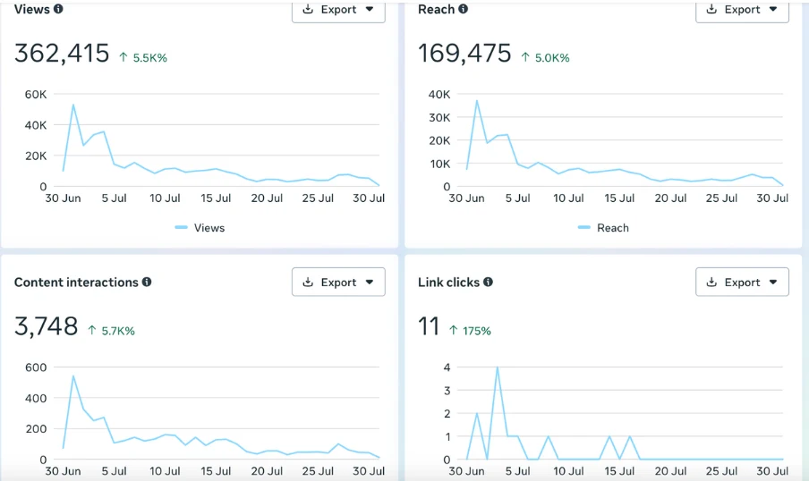
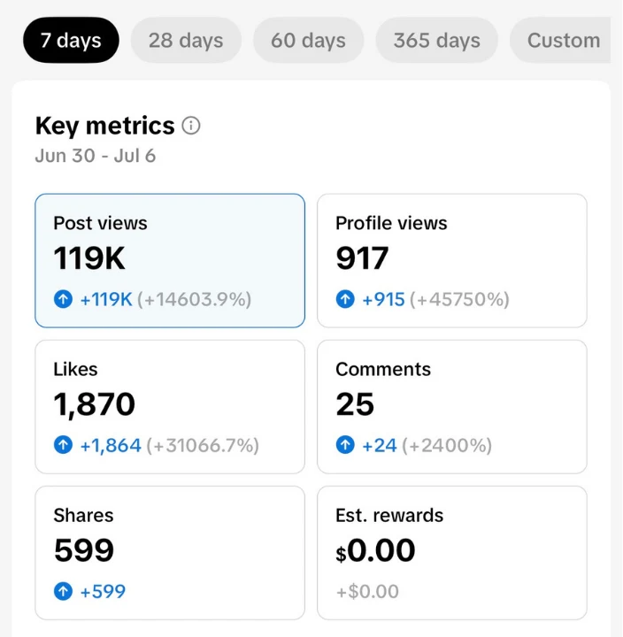
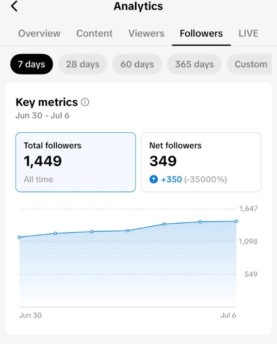

Growing the Imperfecți podcast on social media
Turned long episodes into short clips that people shared — all organic.
My role: Podcast content coordination
169K
people reached on Facebook in one month
135K+
views from two TikTok clips
~600
shares on TikTok
~30%
more TikTok followers in the first week
The results, straight from the analytics




Posts I created
See it live
The podcast
- A podcast about building healthy relationships with children, at home and in the classroom: emotional intelligence, discipline without punishment, communication, boundaries and conscious parenting.
- Published on YouTube, Instagram, Facebook and TikTok.
What I did
- Chose the moments, edited the clips, and wrote the on-screen hooks and copy.
- Planned content and worked with the designer on the visuals for each episode.
- Worked with the host on the script, and coordinated topics, talking points, recording sessions and editing.
- Scheduled and published across platforms, and filmed short episodes.
Why it worked
- I focused on emotionally charged topics that the community deeply relates to.
- These topics started conversations in the comments, and got shared and saved — people relate to honest, vulnerable stories.